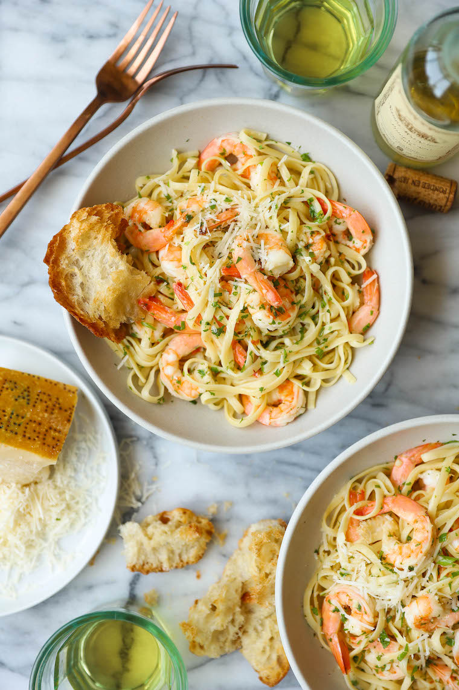

Shrimp Scampi

Description
You won’t believe how easy this comes together in just 15 minutes –
perfect for those busy weeknights!
Ingredients
- 8 ounces linguine
- 2 tablespoons unsalted butter
- 1 pound medium shrimp, peeled and deveined
- 3 cloves garlic, minced
- ¼ teaspoon crushed red pepper flakes, or more, to taste
- ¼ cup white wine*
- ¼ cup freshly squeezed lemon juice
- 1 tablespoon lemon zest
- 2 tablespoons chopped fresh parsley leaves
- Kosher salt and freshly ground black pepper, to taste
- ¼ cup freshly grated Parmesan
Steps
-
In a large pot of boiling salted water, cook pasta according to package
instructions; drain well.
-
Melt butter in a large cast iron skillet over medium high heat. Add
shrimp, garlic and red pepper flakes. Cook, stirring occasionally, until
pink, about 2-3 minutes.
-
Stir in wine and lemon juice. Cook, stirring occasionally, until
slightly reduced, about 5 minutes; remove from heat.
-
Stir in pasta, lemon zest and parsley; season with salt and pepper, to
taste.
- Serve immediately, topped with Parmesan.
More Recipes